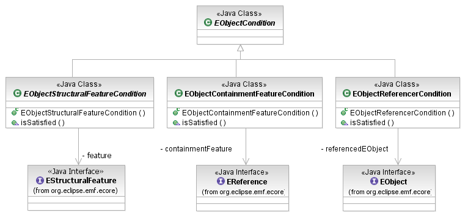
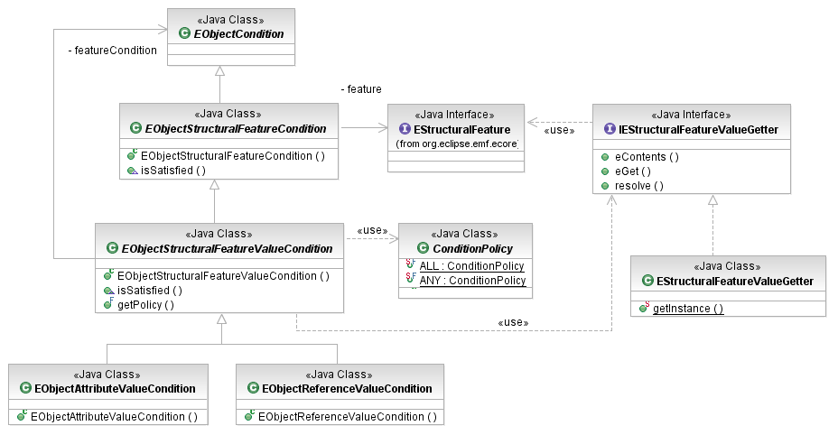

In addition to conditions testing the identity or type of a model element (an EObject), the EMF Model Query Framework provides a variety of conditions that introspect the features of model elements.

[as SVG]
The basic condition that asks about the structural features of model elements is the EObjectStructuralFeatureCondition. This condition pertains to a single EStructuralFeature. By itself, it tests whether that feature is available on an element or not (whether the element's EClass has that feature). This is a useful condition to check for subclasses that ask questions about the values of the feature. Clients may directly extend this class, or they may use the subclasses described below to assemble predicates on the feature values.
The EObjectReferencerCondition selects objects that reference a client-specified target element via any cross-reference feature. That is, it does not consider contaiment or container features.
Set<EObject> subjects = getSubjects(); // hypothetical source of test subjects
Person dickens = getPerson("Charles Dickens");
// look for any library item that was read by, written by, or acted by. Charles Dickens
EObjectCondition cond = new EObjectReferencerCondition(dickens);
for (EObject subject : Subjects) {
if (cond.isSatisfied(subject)) {
System.out.println(subject);
}
}
The EObjectContainmentFeatureCondition selects elements that are contained in a specific feature of their containers. It checks an object's eContainingFeature() against the specified feature.
The EObjectStructuralFeatureValueCondition class defines a flexible framework for predicates on the particular values of features of the objects in the query scope. It includes support for data types (in EAttributes), element references (in EReferences), and the "boolean for-all" and "exists" quantifiers for multi-valued features.

[as SVG]
An EObjectStructuralFeatureValueCondition applies an EObjectCondition (its featureCondition) to the value or values in a structural feature. For multi-valued (multiplicity many) features, the optional ConditionPolicy is used to determine whether the condition matches when ALL values satisfy the feature condition (including the case of an empty set) or when ANY value satisfies the feature condition (excluding the case of an empty set). The default policy is ANY.
The EObjectStructuralFeatureValueCondition uses an IEStructuralFeatureValueGetter to access the values of structural features. This is useful in cases where the implementation of the model being queried has customizations such as lazy loading from the data store that require special handling. Most applications only need the default instance that simply uses EMF reflection to obtain values.
As the EObjectReferenceValueCondition class tests the values in reference features, it is normally used with an EObjectCondition as the feature value condition. EObjectAttributeValueConditions are usually supplied with Conditions on primitive types.
Library subject = getLibrary(); // hypothetical source of library to test
Condition name = new SubStringValue("Dickens");
Condition writerName = new EObjectAttributeValueCondition(
EXTLibraryPackage.Literals.WRITER__NAME, name);
Condition authorName = new EObjectReferenceValueCondition(
EXTLibraryPackage.Literals.BOOK__AUTHOR, writerName);
// are all of the library's books written by somebody named Dickens?
Condition allDickens = new EObjectReferenceValueCondition(
EXTLibraryPackage.Literals.LIBRARY__BOOKS, authorName,
ConditionPolicy.ALL, EStructuralFeatureValueGetter.getInstance());
// are any of the library's books written by somebody named Dickens?
Condition anyDickens = new EObjectReferenceValueCondition(
EXTLibraryPackage.Literals.LIBRARY__BOOKS, authorName,
ConditionPolicy.ANY, EStructuralFeatureValueGetter.getInstance());
System.out.println("Test all: " + allDickens.isSatisfied(subject));
System.out.println("Test any: " + anyDickens.isSatisfied(subject));
The value of a scalar EAttribute or EReference may be null (in EMF, multi-valued features may never contain null). To protect feature-value condition objects from being given null inputs, when a feature value is null, the EObjectStructuralFeatureValueCondition simply returns false without invoking the value condition.
How, then, does a query search for objects that have null values in features? Either extend the EObjectStructuralFeatureCondition abstract class and check for null yourself, or use one of the IS_NULL shared instances define by the ObjectInstanceCondition (for attribute values) and EObjectInstanceCondition (for reference values) classes.
Library subject = getLibrary(); // hypothetical source of library to test
Condition anonymous = new EObjectReferenceValueCondition(
EXTLibraryPackage.Literals.BOOK__AUTHOR,
EObjectInstanceCondition.IS_NULL);
// see whether any of the books in this library has no author
Condition anyAnonymous = new EObjectReferenceValueCondition(
EXTLibraryPackage.Literals.LIBRARY__BOOKS, anonymous,
ConditionPolicy.ANY, EStructuralFeatureValueGetter.getInstance());
System.out.println("Test: " + anyAnonymous.isSatisfied(subject));
Copyright (c) 2000, 2007 IBM Corporation and others. All Rights Reserved.